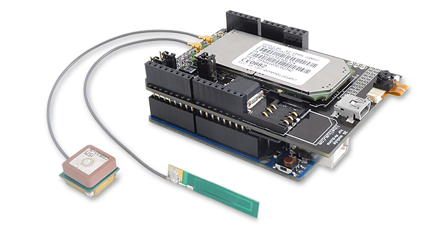

Il faut sauver Sagace!
Le projet Sargarduino est un module Arduino, avec GPS et carte 3G intégrée, installé sur "Sagace" un teckel fugueur qui permettrait d'alerter ses maitres si le chien sort de sa zone de sureté.
Sagace est un teckel de 13ans. Elle est heureuse, sa famille l'aime. Et elle est en pleine santé si on exclue peut etre un léger problème de diabète qui l'a rendu totalement aveugle au fils des années. Elle s'adapte, profitant des murs de la maison pour rediriger sa trajectoire et de son odorat pour retrouver son chemin lors de ses sorties au grand air.
Malheureusement il reste un problème persistant. Si l'animal s'aventure un peu loin... elle se perd, ce qui la met gravement en danger. Elle a frôlée la mort à plusieurs reprises. Par exemple, elle est restée plus d’un mois dans la nature, elle n'avait littéralement plus que la peau sur les os lorsque sa famille l’a miraculeusement retrouvée.
Sagace vit en normandie, dans une ferme et ses hectares. Elle aime la vie au grand air mais comme nous l'avons vu précédemment, nous devons limiter son terrain de jeu. Nous allons donc créer une "zone de sureté" autours des Pastys qu'elle ne pourra dépasser sans alerter sa famille.
Le domaine des Pastys.
Grâce à théorème élaboré, nous allons créer un rayon autours de la ferme qui délimitera la zone de sureté.
Sargarduino se compose d'une carte Arduino, d'un module GPS, d'une carte 3G, d'une antenne 3G et GPS.
Le Sargarduino "nu"

Pour son usage pratique et pour résister aux conditions climatiques changeantes de la normandie, le module sera encastré dans un boitier en plastique hermétique. Fixé à un harnais pour teckel, Sargarduino sera positionné sur le dos de Sagace. En y ajoutant une batterie, le poid pourrait être un peu élevé pour un vieux chien, mais une partie du problème sera de facto réglé, elle ira moins loin !
Deux tréteaux, une planche de bois, 500g de maté, une multiprise, 3 chaises et une connexion internet. L'espace de co-working improvisé est prêt à accueillir Domitille, Gaspard et Paul-Henri pour un weekend studieux.
This blog post shows a few different types of content that's supported and styled with Bootstrap. Basic typography, images, and code are all supported.
Cum sociis natoque penatibus et magnis dis parturient montes, nascetur ridiculus mus. Aenean eu leo quam. Pellentesque ornare sem lacinia quam venenatis vestibulum. Sed posuere consectetur est at lobortis. Cras mattis consectetur purus sit amet fermentum.
Curabitur blandit tempus porttitor. Nullam quis risus eget urna mollis ornare vel eu leo. Nullam id dolor id nibh ultricies vehicula ut id elit.
Etiam porta sem malesuada magna mollis euismod. Cras mattis consectetur purus sit amet fermentum. Aenean lacinia bibendum nulla sed consectetur.
Vivamus sagittis lacus vel augue laoreet rutrum faucibus dolor auctor. Duis mollis, est non commodo luctus, nisi erat porttitor ligula, eget lacinia odio sem nec elit. Morbi leo risus, porta ac consectetur ac, vestibulum at eros.
Cum sociis natoque penatibus et magnis dis parturient montes, nascetur ridiculus mus.
Example code blockAenean lacinia bibendum nulla sed consectetur. Etiam porta sem malesuada magna mollis euismod. Fusce dapibus, tellus ac cursus commodo, tortor mauris condimentum nibh, ut fermentum massa.
Cum sociis natoque penatibus et magnis dis parturient montes, nascetur ridiculus mus. Aenean lacinia bibendum nulla sed consectetur. Etiam porta sem malesuada magna mollis euismod. Fusce dapibus, tellus ac cursus commodo, tortor mauris condimentum nibh, ut fermentum massa justo sit amet risus.
Donec ullamcorper nulla non metus auctor fringilla. Nulla vitae elit libero, a pharetra augue.
Cras mattis consectetur purus sit amet fermentum. Sed posuere consectetur est at lobortis.
Cum sociis natoque penatibus et magnis dis parturient montes, nascetur ridiculus mus. Aenean eu leo quam. Pellentesque ornare sem lacinia quam venenatis vestibulum. Sed posuere consectetur est at lobortis. Cras mattis consectetur purus sit amet fermentum.
Curabitur blandit tempus porttitor. Nullam quis risus eget urna mollis ornare vel eu leo. Nullam id dolor id nibh ultricies vehicula ut id elit.
Etiam porta sem malesuada magna mollis euismod. Cras mattis consectetur purus sit amet fermentum. Aenean lacinia bibendum nulla sed consectetur.
Vivamus sagittis lacus vel augue laoreet rutrum faucibus dolor auctor. Duis mollis, est non commodo luctus, nisi erat porttitor ligula, eget lacinia odio sem nec elit. Morbi leo risus, porta ac consectetur ac, vestibulum at eros.
Cum sociis natoque penatibus et magnis dis parturient montes, nascetur ridiculus mus. Aenean lacinia bibendum nulla sed consectetur. Etiam porta sem malesuada magna mollis euismod. Fusce dapibus, tellus ac cursus commodo, tortor mauris condimentum nibh, ut fermentum massa justo sit amet risus.
Etiam porta sem malesuada magna mollis euismod. Cras mattis consectetur purus sit amet fermentum. Aenean lacinia bibendum nulla sed consectetur.
Donec ullamcorper nulla non metus auctor fringilla. Nulla vitae elit libero, a pharetra augue.